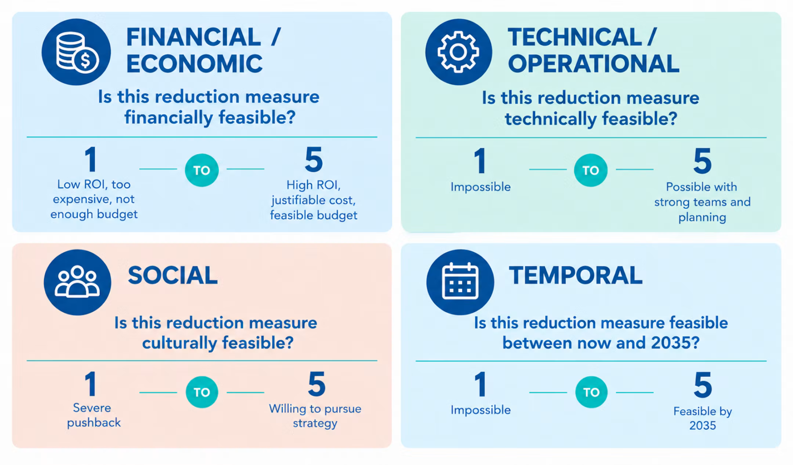
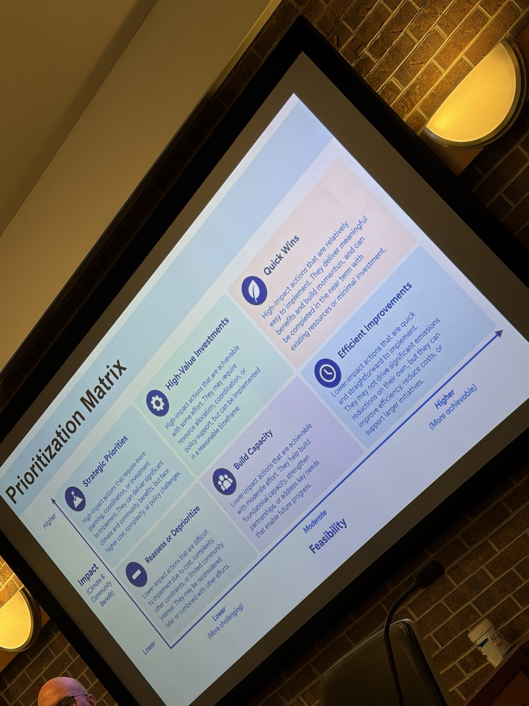
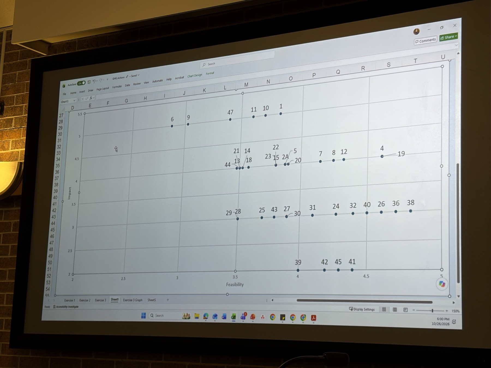

Prairie Village, Kansas · Environmental Committee table
The action table, read against the Climate Action Guide.
The November 2025 Community Climate Action Guide tells residents what to do at home, and then lists 38 things the city itself could do. Those city items have short codes: EL, EE, T, and W. A printed action table uses those same codes in its Source column. This page is that table, with each code opened back up to the sentence in the guide.
Habits and choices.
Low-cost or no-cost steps for households: thermostat setbacks, cold-water laundry, composting, walking.
Investments for lasting change.
Purchases: heat pumps, solar, an electric vehicle, a home composting system. The city already has a Residential Sustainability Grant for some of these.
Prairie Village’s role.
Thirty-eight city actions, written with subject-matter working groups. This is the only part of the guide the action table cites. Codes run EL1–EL17, EE1–EE8, T1–T4, and W1–W9.
The table has two kinds of rows
Rows that cite a code are the city’s version of a guide action. Several codes often land in one row. Row 12, the Residential Sustainability Grant expansion, carries four: appliances (EL10), heat pumps (EE1), home waste diversion (W2), and home composting (W6). It also adds a local note the guide does not have, a multi-family glass grant.
Rows that say “Environmental Committee” are not in the guide. They are parks, pesticides, native plants, glass and bulky-item service, community gardens, council process, and the greenhouse-gas inventory.
The guide’s own targets sit behind both. Prairie Village joined Cities Race to Zero on October 4, 2021. The guide, written with KERAMIDA, uses a 2018 community inventory of 526,033 metric tons of CO2e and aims at a 50% cut by 2030 (263,017 metric tons) and net zero by 2050. City operations were about 1,500 metric tons in 2018 and are covered by the December 2023 municipal plan, which this table does not walk through action by action.
What the impact and cost columns are doing
The printed table has no legend. The labels below are a reading of how the column is used, not a city definition. Relative cost is High, Medium, or Low. The page does not give dollar amounts. The guide rates its own actions by complexity, and that rating did not come through in the text of the PDF, so it is not repeated here.
How feasibility is measured
Feasibility here is four separate questions about a reduction measure. Each answer is a whole number from 1 to 5. The graphic names the low end and the high end. It does not add the four numbers into one score, and it does not say that a high score on one question cancels a low score on another.
Financial asks whether the return is worth the cost, or whether the money is actually available. Either one can make a measure feasible.
Technical / operational asks about the people and the equipment Prairie Village already has, and about state law that allows or blocks the work.
Social asks whether the measure can be sold to the community, including where state law shapes that sale.
Temporal asks what Prairie Village can get done between now and 2035. The score stays inside that window.

The measurement graphic. The four write-ups below use its questions and its endpoint wording.
How to score one measure
Pick one reduction measure. On this page that is one row, or one guide code inside a row when a row bundles several.
Answer each question on its own. A 1 is the low end printed on the graphic. A 5 is the high end. A 3 is the middle of those two descriptions. The graphic does not name 2, 3, or 4.
Write down four numbers. Keep the reason next to each number. The reasons are what a later pass can revise.
None of the 45 rows have these scores yet.
1 · Financial / economic
Is this reduction measure financially feasible?
1
Low ROI, too expensive, not enough budget
2
Closer to the low end
3
Middle of the two ends
4
Closer to the high end
5
High ROI, justifiable cost, feasible budget
Two questions sit inside this score, and a measure can pass on either one. Is the return worth what it costs? And is this something Prairie Village could actually have the money for? A high score can come from a return that justifies the spending, from a real budget or grant, or from both. A low score means the return is not worth it and the money is not there.
The table’s relative cost column is only High, Medium, or Low, with no dollar amounts. It can inform the score. It is not the score. An existing program, such as the Residential Sustainability Grant or the school grant, is one way the money can already be real.
2 · Technical / operational
Is this reduction measure technically feasible?
1
Impossible
2
Closer to impossible
3
Middle of the two ends
4
Closer to possible
5
Possible with strong teams and planning
This score is about what is already here: the people, and the systems and technology, including equipment. It also covers state law. A high score means Prairie Village has the staff and the equipment, and Kansas law leaves room to do the work, with the strong team and the planning the graphic names at 5. A low score means the people, the systems, or the law make the measure impossible.
Count city staff and the equipment the city or its residents already use. Count a statute the same way: if state law forbids the operation, the score stays low even when the equipment is on hand. A code change, a truck, a charger, or a compost drop-off are different kinds of capacity. A partner named on a row, such as Evergy, Johnson County, or Public Works, counts only for the part of the work that partner already covers.
3 · Social
Is this reduction measure culturally feasible?
1
Severe pushback
2
Closer to severe pushback
3
Middle of the two ends
4
Closer to willing
5
Willing to pursue strategy
This score is whether Prairie Village can sell the measure to the community. State law is part of that sale. A 1 is severe pushback, or a statute that keeps the city from making the ask. A 5 is a community willing to pursue the strategy, on a path the law allows. The audience is whoever has to accept it, including residents, businesses, associations, schools, and the council when the row needs them.
Some rows name the sale directly. Row 15 is about association limits on solar, which is both a community question and a state-law question. Rows 27 and 28 ask restaurants to change equipment. Row 20 reviews trash and recycling bin rules at existing homes.
4 · Temporal
Is this reduction measure feasible between now and 2035?
1
Impossible
2
Closer to what we cannot do by 2035
3
Middle of the two ends
4
Closer to what we can do by 2035
5
Feasible by 2035
This score is only about what Prairie Village can do from now through 2035. A 1 means the measure cannot be done in that time. A 5 means it can. Anything that would have to wait until after 2035 stays at the low end, because this question does not look past that year.
What gets written down
Each measure keeps four scores and a short reason for each. The blank card is the record. Scores are not on the action table yet.
Blank feasibility score card
Question
Low end, 1
High end, 5
Score
Reason
Financial. Is the return worth it, or can we get the money?
Low ROI, too expensive, not enough budget
High ROI, justifiable cost, feasible budget
—
Technical. Do we have the people, the equipment, and room under state law?
Impossible
Possible with strong teams and planning
—
Social. Can we sell it to the community under state law?
Severe pushback
Willing to pursue strategy
—
Temporal. What can we do between now and 2035?
Impossible
Feasible by 2035
—
How actions get prioritized
After the four scores, an action is placed on a matrix. The vertical axis is impact: climate and community benefit, from lower to higher. The horizontal axis is feasibility, from lower and more challenging, through moderate, to higher and more achievable. The slide names six boxes.

The prioritization slide, photographed in the room. The wording of each box is set out in the table so it can be read on its own.
The four scores inform where an action sits on the feasibility axis. Each score stays separate. The matrix does not average them into one number. A hard stop moves an action toward the challenging side. State law that blocks the work is one. Work that has to wait until after 2035 is another.
Impact on this matrix means climate and community benefit. The action table’s greenhouse-gas column is a separate label: Direct, Enabling, Indirect, or Supporting. Relative cost on that table, High, Medium, or Low, is separate from both axes.
The six boxes on the prioritization slide.
Impact
Lower feasibility. More challenging.
Moderate feasibility
Higher feasibility. More achievable.
Higher impact. Climate and community benefit.
Higher impact · more challenging
Strategic Priorities
High-impact actions that require more planning, coordination, or investment to implement. They can deliver significant climate and community benefits, but face higher cost, complexity, or policy challenges.
Higher impact · moderate
High-Value Investments
High-impact actions that are achievable with some effort. They may require resource allocation, coordination, or policy support, but can be implemented in a reasonable timeframe.
Higher impact · more achievable
Quick Wins
High-impact actions that are relatively easy to implement. They deliver meaningful benefits and build momentum, and can be completed in the near term with existing resources or minimal investment.
Lower impact. Climate and community benefit.
Lower impact · more challenging
Reassess or Deprioritize
Lower-impact actions that are difficult to implement due to cost, complexity, other constraints, or limited community interest. They may be reconsidered later or combined with other efforts.
Lower impact · moderate
Build Capacity
Lower-impact actions that are achievable with moderate effort. They help build foundational capacity, strengthen partnerships, or address key needs that enable future progress.
Lower impact · more achievable
Efficient Improvements
Lower-impact actions that are quick and straightforward to implement. They may not drive significant emissions reductions on their own, but they can improve efficiency, reduce costs, or support larger initiatives.
The slide’s phrases “near term” and “reasonable timeframe” are left as the slide says them. The temporal score above is the separate question of what can be done from now through 2035. The six boxes stay categories. The group’s chart in the next section is the placement they actually made, as two numbers rather than a box.
Where the group placed each action
On October 26, 2026, the group plotted the actions on one chart. The horizontal axis is feasibility. The vertical axis is impact, meaning climate and community benefit. A number on the chart is the row number in the action table. Choosing a number opens that row. The number in the row opens this chart.

The group’s chart, photographed from the screen at 6:00 p.m. The clickable chart below is the same placement, read to the nearest tenth.
Several numbers sit on one dot in the photograph, so those rows share one score. That happens for 13 and 21; for 15, 22, and 23; for 4 and 19; for 28 and 29; and for 27 and 30. Read to the nearest tenth, 44 joins 13 and 21, and 14 joins 18. Points 5 and 20 sit on the next dot over from the point labeled 2A, and at a tenth all three read the same.
The 45 actions
Search, filter, and sort the printed table. Column headings sort the rows. Chart impact and chart feasibility are the group’s placement. A number in those columns opens that point on the chart. Choose a guide code to open that code in the crosswalk. Wording follows the page.
Every guide code, and the row that carries it
Each code from “Prairie Village’s Role in Climate Action” appears on exactly one row. The sentence under the code is the guide’s. The link is the action table’s.
The half of the guide this table does not list
A resident using the guide will not find monarch waystations or a council agenda note in it. A reader of the table will not find “wash clothes in cold water.” Those resident steps are the first two chapters. Local groups named in the guide’s appendix, including Evergy, Climate Action KC, Bridging The Gap, and KC Can Compost, are the support listed for that half.
City programs already next to this table
Grants and rebates, including the Residential Sustainability Grant and the school sustainability grant named in row 29.
Environmental Committee: mattress reuse, community gardens, the Mayor’s Monarch Pledge, and the public pesticide inventory. The committee meets on the fourth Wednesday at 5:30 p.m. at City Hall, except July and December.
Contain the Rain reimburses rain gardens, native plantings, and rain barrels. The table’s landscaping rows do not cite it.
How to read this page
The 45 rows were transcribed from photographs of a printed table. The sheet in the photographs has no visible title, date, or note saying the City Council adopted it. Treat it as the working table it appears to be. Where a source cell adds a phrase after the code, that phrase is kept as a local note. “First Washington,” on the cardboard drop-off row, is printed that way.
Guide names and descriptions are from the November 2025 Community Climate Action Guide, the file the city posts as Document Center item 602. Emission figures are the guide’s 2018 inventory, not a new calculation. The municipal operations plan is item 601.
Row 45 names Waste Management. The guide names Republic Services as the curbside recycling collection provider. Both are left as their documents say them.
The feasibility section follows a four-question graphic. The words at 1 and at 5 are the graphic’s. Financial means the return is worth it or the money is actually available. Technical and operational means the people and the equipment already here, and state law that allows or blocks the work. Social means the measure can be sold to the community, including where state law shapes that sale. Temporal means what can be done from now through 2035, and it stays inside that window. The graphic does not name 2, 3, or 4, and it does not score the 45 rows.
The prioritization section follows a six-box slide. Impact on that slide is climate and community benefit. Feasibility runs from more challenging to more achievable. The four scores inform that axis and stay separate. A hard stop, state law that blocks the work or work that waits until after 2035, moves an action toward the challenging side. The six boxes are categories. The group chart is the placement: impact and feasibility read from a photograph of the chart to the nearest tenth. Eight rows have no point on that chart. The chart also shows 47 and 2A, which are not rows in the table.